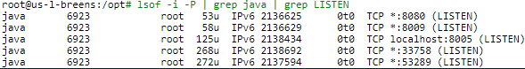

In my experience, the most common usage of serialized objects is not through HTTP, but other protocols running on different ports that you aren’t expected to talk to. To list the ports that your application is listening on try this:

If you see port 1099, that’s Java RMI. RMI by definition just uses serialized objects for all communication. This is trivially vulnerable, as seen in our OpenNMS exploit.
How do you actually stimulate traffic to these ports? Well they must be open for a reason. Open up Wireshark, see if anything that looks like a serialized object is going into them. Try running some of the scripts or command-line tools that come with the application or application server. For example Jenkins, WebLogic, and WebSphere all have commandline tools that use serialized objects as we’ll see later.
If the traffic is encrypted, you’re going to need to find a way to read it. Maybe setup a proxy that can handle SSL man in the middle like Burp and relay the traffic through that. An example of this can be seen in the WebSphere exploit.